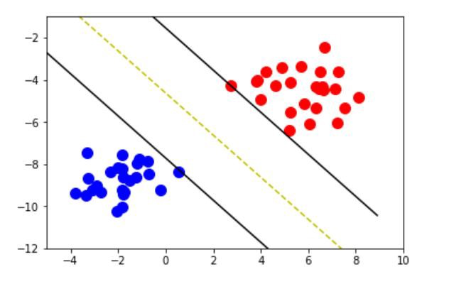
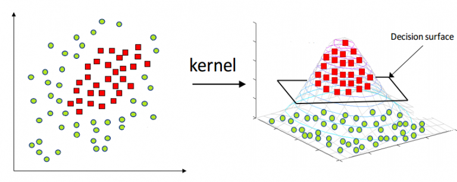
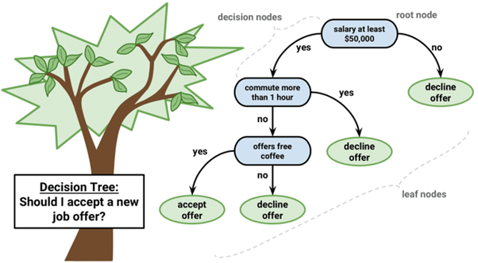
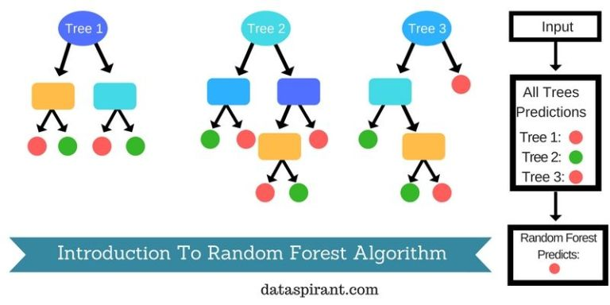

Classification
is the type of Supervised Learning in which labelled data can use, and this data is used to make predictions in a non-continuous form.
The output of the information is not always continuous, and the graph is non-linear. In the classification technique,
the algorithm learns from the data input given to it and then uses this learning to classify new observation. This data set may merely be bi-class,
or it may be multi-class too. Ex:- One of the examples of classification problems is to check whether the email is spam or not spam
by train the algorithm for different spam words or emails.
Types of Classification Algorithms:
There are many Classification algorithms are present in machine learning, which used for different classification applications. Some of the main classification algorithms are as follows
K-Nearest Neighbours:

KNN algorithm is one of the most straightforward algorithms in classification, and it is one of the most used learning algorithms.
A majority vote of an object is classified by its neighbours, with the purpose being assigned to the class most common among its k nearest neighbours.
It can also use for regression — output is the value of the object (predicts continuous values). This value is the average (or median) of the benefits of its k nearest neighbours.
Support Vector Machines:

A Support Vector Machine is a type of Classifier, in which a discriminative classifier formally defined by a separating hyperplane.
The algorithm outputs an optimal hyperplane which categorises new examples. In two dimensional space, this hyperplane is a line dividing a plane into two parts
wherein each class lay on either side.
Kernel Support Vector Machines:

Kernel-SVM algorithm is one the algorithms used in classification technique, and it is mathematical functions set that defined as the kernel.
The purpose of the core is to take data as input and transform it into the required form. Different SVM algorithms use different types of kernel functions.
These functions can be different types. For example linear and nonlinear functions, polynomial functions, radial basis function, and sigmoid functions.
Naive Bayes:

- P(c|x) is the posterior probability of class (target) given predictor (attribute).
- P(c) is the prior probability of class.
- P(x|c) is the likelihood which is the probability of predictor given class.
- P(x) is the prior probability of predictor.
Naive Bayes is a type of Classification technique, which based on Bayes’ Theorem with an assumption of independence among predictors.
In simple terms, a Naive Bayes classifier assumes that the presence of a particular feature in a class is unrelated to the presence of any other function.
Naive Bayes model is accessible to build and particularly useful for extensive datasets.
Decision Tree Classification:

Decision tree makes classification models in the form of a tree structure. An associated decision tree incrementally developed and at the same time
It breaks down a large data-set into smaller subsets. The final result is a tree with decision nodes and leaf nodes. A decision node (e.g., Root) has two or more branches.
Leaf node represents a classification or decision. The first decision node in a tree which corresponds to the best predictor called root node.
Decision trees can handle both categorical and numerical data.
Random Forest Classification:

Random Forest is a supervised learning algorithm. It creates a forest and makes it somehow casual. The wood it builds is an ensemble of Decision Trees,
it most of the time the decision tree algorithm trained with the “bagging” method, which is a combination of learning models increases the overall result.